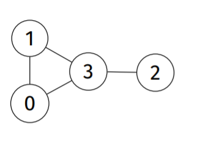

Graphs
Contents
A graph is a collection type where each node knows of its related nodes.
They’re used heavily in path finding algorithms…
- Which nodes are connected?
- Are the nodes fully connected?
- Can I get from A to B? Fastest way? Cheapest way?
Reminds me of the game One Touch Drawing by Ecapyc
A graph is a set of vertices V and edges E
An edge (v,w) ≠ (w,v)
Types of Graphs
Undirected
Directed / Digraph
- A digraph with V vertices can have at most V^2 edges
- Digraphs can have self loops (v → v)
Multigraph
- Allows for multiple edges between two vertices
- eg. callgraphs and maps
Weighted
- Each edge has an associated weight
- eg. maps and networks
Simple Graphs
- A set of vertices
- A set of undirected edges
- No self loops
- No parallel edges
- Max edges - |E| = V * (V-1)/2
Density and Sparsity
If E is closer to V^2 - considered dense
If E is closer to V - considered sparse If E = 0 - we have a set (no paths) If E = |E| - complete graph
deg(v) -> Number of edges incident on a vertex
- A path is a sequences of vertices and edges
- A path is simple if it has no repeating vertices
- A path is a cycle if it is simple, but loops (like a circular linked list)
- A graph is connected if there is a path from every vertex to every other (A somehow reaches B)
- A tree is a connected with no cycles; each pair of vertices has only one path between
- A *spanning tree of a graph is a subgraph that contains all its vertices and is a single tree (???)
- A spanning forest of a graph is a subgraph that contains all its vertices an is a set of trees
- A clique is a complete subgraph
Graph Representation
Adjacency Matrices
An adjacency matrix is a way of implementing a graph.
It is a V x V matrix

| 0 | 1 | 0 | 1 | Node 0 is connected to node 1 and 3 |
| 1 | 0 | 0 | 1 | Node 1 is connected to node 0 and 3 |
| 0 | 0 | 0 | 1 | Node 2 is connected to node 3 |
| 1 | 1 | 1 | 0 | Node 3 is connected to node 0, 1 and 2 |
Whilst it is an easy to understand (and easy to implement) method, it consumes a large memory overhead, since it needs to store information to say “No I’m not connected to …”.
Implementation
|
|
Adjacency Lists
An alternative to adjacency matrices are adjacency lists.
Here we use a linked list association to only store information of edges that exist
Implementation
|
|
Adjacency Matrices vs Adjacency Lists
| Function | Matrix | List |
|---|---|---|
| Space | V^2 |
V+E |
| Initialise | V^2 |
V |
| Destroy | V |
E |
| Insert Edge | 1 |
V |
| Delete Edge | 1 |
V |
| Find Edge | 1 |
V |
| Is Isolated | V |
1 |
| Is Adjacent | 1 |
V |
| Degree | V |
E |
So, this suggests that adjacency matrices are better!
They cost less operations, however take up a higher memory footprint.
Sooo, for small numbers of vertices (how small is small though???), adjacency matrices are preferred, else use adjacency lists.
Graph Search
To determine if a path exists between the vertices v and w, we would have to examine the vertices adjacent to v to check if any of them are w. Else check if any of the adjacent vertices are adjacent to w, and if the adjacent vertices of the adjacent vertices are, and if the adjacent vertices to the adjacent vertices of the adjacent vertices are, and so forth..
Pseudo
- Create a crawl structure with the starting node
- Get the next vertex, mark it as visited, and repeat for its neighbours
Methods
- BFS - Breadth First (Adjacent nodes first) - use a queue
- DFS - Depth First (Longest paths first) - use a stack
- Dijkstra (Lowest-cost paths first)
- GBFS - Greedy Best-First (Shortest heuristic distance)
- A* - Lowest-cost and shortest-heuristic distance
DFS - Depth-First Search
Search through the longest paths first
count - number of vertices traversed so far
pre[] - order in which vertices were visited (for ‘pre-order’)
st[] - predecessor of each vertex (for ‘spanning tree’)
The edges traversed in all graph walks form a spanning tree, which:
- has edges corresponding to the call-tree of the recursive function
- is the original graph without cycles and alternative paths
If a graph is not connected, a DFS will produce a spanning forest.
An edge connecting a vertex with an ancestor that is not its parent is a back-edge.